|
Тайна Доуэна
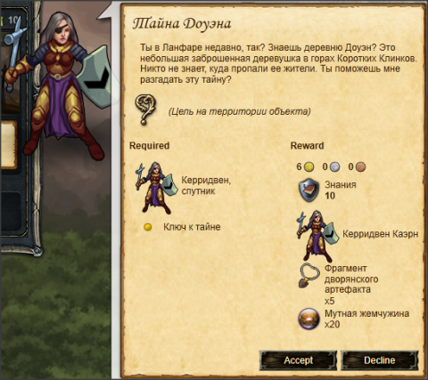 Начало задания "Тайна Доуэна" 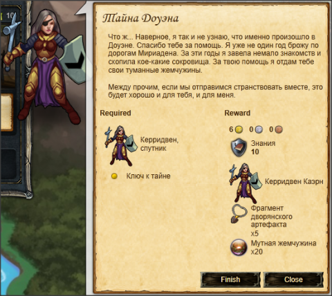 Завершение задания "Тайна Доуэна"
| Выдает
|
Черридвен Каэрн, Таверна "Мокасин", Ланфар
|
| Требуется для получения квеста
|
|
| Нужно для завершения
|
- Найти Ключ к тайне деревни Доуэн
 Знание пещер 22+ (а лучше 25+) Знание пещер 22+ (а лучше 25+)
|
| Начав задание вы получите
|
|
| Где выполнять
|
|
| Награда
|
|
| Открывает доступ к:
|
|
Введение
Итак, приступим.
Как только Вы закончите приключения в парках Соколинии,- вам откроется путь в следующую локацию под названием Ланфар.
Именно там Вы сможете нанять этого замечательного спутника!
Хоть она и не является лучшим бойцом в игре, Вас приятно порадуют ее навыки на уровне:
А самое приятное – это всего лишь 2 единицы неповиновения, что позволит в будущем брать ее с сильными бойцами Т3, Т4 в команду.
Выполнение
| 1
|
Находим Таверну "Мокасин" и берем квест
|
- Проведите разведку около координат 9,263 в Громыхающем лесу, чтобы обнаружить Таверну "Мокасин". Для этого потребуется:
- Возьмите квест Тайна Доуэна у Черридвен Каэрн, на время выполнения задания к вам присоединится Керридвен. Ее характеристики, пока квест не завершен:
|
| 2
|
Находим деревню Керридвен
|
Основной текст">
После завершения получаем квест "Еще улики", в котором нам нужно найти следы.
На самом деле, следы встречаются в достаточно большой окрестности этих точек
- Придите в указанные точки и найдете следы, для этого требуется:
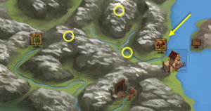
- Возвращайтесь в деревню и поговорите с Черридвен - она даст задание "Восьминогие чудовища"
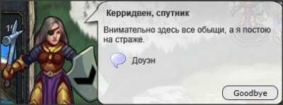 Керридвен, Заброшенняа береговая деревня, при разговоре |
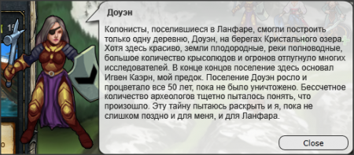 Керридвен, Заброшенняа береговая деревня, "Доуэн" |
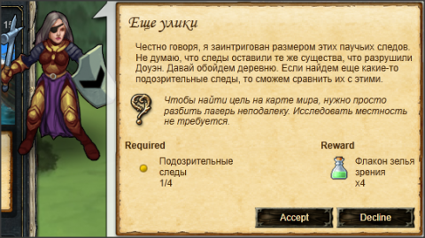 Начало задания "Еще улики" |
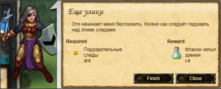 Завершение задания "Еще улики" |
|
| 3
|
Проходим Паучье гнездо
|
Основной текст">
- При получении задания "Восьминогие чудовища" Черридвен отмечает на вашей карте Паучье гнездо на Великих равнинах
- Идем туда и выполняем действие "Сжечь паутину", для этого нужно:
| Монстр
|
Навыки монстра
|
Спец.
способности
|
Примечание
|
| Атакующие
|
Защитные
|
Знания местности
|
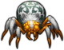
Лесной убийца
|
 8-12 8-12
 25-31 25-31
 8-12 8-12
|
 15-21 15-21
 27-33 27-33
 27-33 27-33
|
20-28
|
нет
|
|
 30-31 30-31
|
|
Для прохождения нужны спутники с > 20-30.
Пример отряда, которым можно пройти задание:
Ираэн, 2 Оруженосца, Войтек
- После боя обыщите паучье гнездо, для этого требуется:
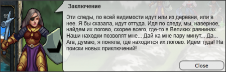 Керридвен, Заброшенняа береговая деревня, "Заключение" |
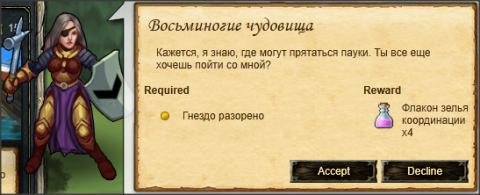 Начало задания "Восьминогие чудовища" |
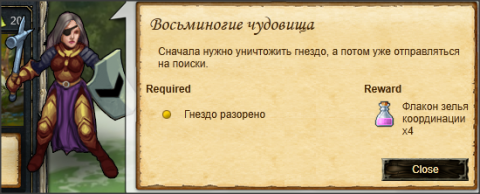 До завершения задания "Восьминогие чудовища" |
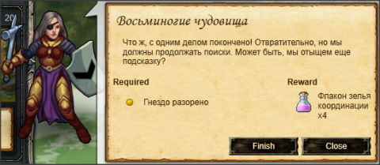 Завершение задания "Восьминогие чудовища" |
|
| 4
|
Проходим Винный погреб Доуэна
|
Основной текст">
Поговорите с Черридвен и возьмите следующее задание "Последний след", это откроет вам местоположение Винного погреба Доуэна
В общем-то, в этом погребе у Вас будут противники, похожие на паучков в гнезде.
При заходе убедитесь, что отравление зельями у Вас 0. И обязательно навык  Знание пещер не ниже 22 (общий). Знание пещер не ниже 22 (общий).
Можете попробовать.
ПС. Советы прохождения!
- В погребе всегда деритесь своими лучшими бойцами (исключение, о котором я писал выше, -допслоты)
- Всегда танкуйте героем. И ни в коем случае не дефьтесь Ираэном. Он будет нужен для босса.
- Если ваши соратники подойдут к боссу побитыми – шанс, что вы проиграете сильно возрастет. А героя можно полечить теми самыми хилками 20/5, которые Вы приобрели.
- Маленькие паучки бьют больнее больших. Убивайте маленьких первыми (герой + 2 оруженосца). Один за одним.
- После каждой битвы лечите героя. Не обязательно до 100%, но выше 80% все места. Учтите, что до босса Вы будете драться 3-5 раз в зависимости от везения.
- Босс этой шайки имеет 60+ проникающего урона, и защиту 35\50\30.Кроме того, он к Вам выйдет не один, а с 2 маленькими и 2мя большими пауками. В первом раунде дефьтесь Вашим 5м соратником. Будьте готовы, что, скорее всего, он сдохнет. Атакуем по схеме:
Ираэн Босса, а мы должны убить героем и 2мя оруженосцами одного из маленьких паучков за 1 ход. Если получится – отлично. В следующем раунде убиваем 2го минипаука, танкуя героем.
-
После 2го раунда серьезный урон нам наносит только босс.
-
Теперь атачим босса Ираэном, героем и одним из сквайров. Другим сквайром дефимся.
-
Так 2 раза. Теперь деф Ираэном 1 раз. Потом деф героем 1-2 раза, а там уж как повезет.
- Первым делом убиваем босса, а уже потом всех остальных, т.к. урон босса от 50+ дамага, а паучки бьют не больше 10. Боссу достаточно 2 раза папасть вам в 1 место, как вы сразу проиграете.
(Изменено Bupyc_X)
Удачи! Не расстраивайтесь, если не получилось с 1го раза!
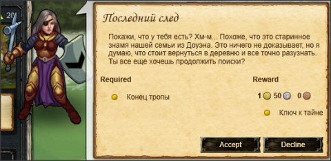 Начало задания "Последний след" |
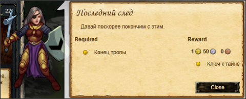 До завершения задания "Последний след" |
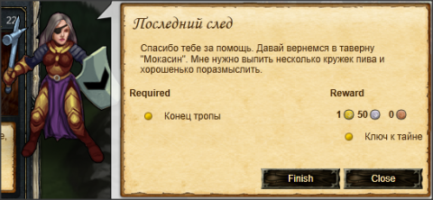 Завершение задания "Последний след" |
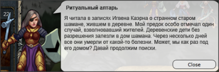 Керридвен, "Ритуальный алтарь", Винный погреб Доуэн (A3) |
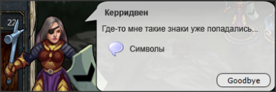 Керридвен, Винный погреб Доуэн (С3), при разговоре |
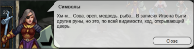 Керридвен, Винный погреб Доуэн (С3), "Символы" |
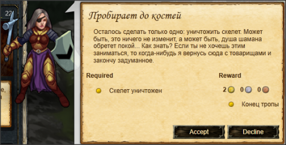 Начало задания "Пробирает до костей" |
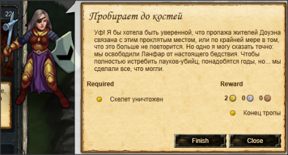 Завершение задания "Пробирает до костей" |
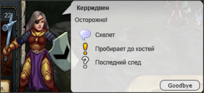 Керридвен, Винный погреб Доуэн (D3), при разговоре |
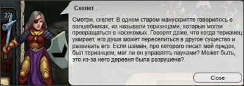 Керридвен, Винный погреб Доуэн (D3), "Скелет" |
|
| 5
|
Возвращаемся в Таверну "Мокасин
|
Говорим с Керридвен, и получаем её в наёмники .
|
Достижения
За выполнение квеста дают достижение
| Достижение
|
Текст
|
Описание
|
| Сага о Керридвен
|
Разгадайте тайну Доуэна и получите Керридвен
|
- Тайна Доуэна
- Ещё улики
- Ключ к тайне
- Дно Доуэна
- Ужас
|
|
 Археология - 30-45
Археология - 30-45
 Разведка - 25-40
Разведка - 25-40
 Плотницкое дело - 15-30
Плотницкое дело - 15-30